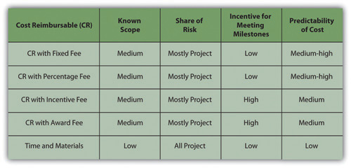

To achieve the objectives of the project, the management team will purchase goods and some services. The process of obtaining goods and services from providers who are outside of the organization is procurementObtaining goods and services from providers outside the organization.. This chapter discusses the process for selecting the work that will be procured and the different methods and processes for procuring the equipment, materials, and services for the project.
The project team decides the work that will be self-performedWork done by members of the organization rather than outsiders.—performed by members of the project team—and the work that will be outsourced to others. The procurement strategy focuses on the work that will be outsourcedServices or products provided by another company.—performed by outsiders.
Luu, Ng, and ChenDuc Thanh Luu, S. Thomas Ng, and Swee Eng Chen, “Parameters Governing the Selection of Procurement System,” Journal of Engineering, Construction, and Architectural Management 10, no. 3 (2003): 209–18. studied project procurement selection priorities and identified budget and schedule as the most important considerations in the decision to outsource activities. This study of construction projects also identified other items that project managers must consider in developing a procurement strategy, including quality, risk, complexity, and flexibility. Some outsourcing decisions are easy.
A construction company has a contract to build a large building in downtown New York. Most, if not all, the construction materials, such as steel and concrete, will be purchased from companies that specialize in steel and concrete. Existing companies that produce and sell steel can provide the steel the project needs at a much lower cost and faster than if the project manager’s organization attempted to build the capacity itself.
Some outsourcing decisions—sometimes called make or buy decisions—are more difficult. On the same building construction project, new construction materials and methods are required that will make the building more energy efficient. The project manager can outsource this portion of the project to companies that have this expertise or develop this expertise on the project and self-perform the work. The costs of developing this expertise within the project will be more expensive and may take more time than outsourcing this work.
Self-performing this work also has benefits. The project team would develop this expertise and the additional expertise would add value to the parent company and save money on future projects. The project management team would have greater control over the work because the work would be performed by members of the project team instead of outsiders. Self-performing and outsourcing the work have both benefits and risks.
This decision is primarily influenced by the following:
The following factors also influence outsourcing decisions:
On the New York building construction project, the project manager decided to outsource the portion of the work that required new methods and materials. The project team assigned engineers from the project team to evaluate the work during the project and to assess the appropriate methods and costs for the parent company to develop this capacity within the company. The additional costs of developing the capacity and the additional risks of implementing a new method with existing resources outweighed the benefits of developing the capacity within the organization.
The project procurement strategy begins with these self-perform or buy decisions.
On the New York building construction project, the basic engineering and construction activities are core expertise of the parent company, and the project team had access to the qualified resources to perform the work. The decision to self-perform this portion of the work was easy because the company had a cost and schedule advantage by using the existing resources. The purchase of the steel, concrete, and other commodities was also easy because the costs of developing those resources far outweighed the benefit of purchasing them.
Some of the procurement decisions are not so obvious and the project team evaluates the cost, schedule, quality, flexibility, and risk implication of self-performing versus outsourcing the work.
Internalize your learning experience by preparing to discuss the following.
Choose a situation with which you are familiar where you or your organization chose to hire someone outside your organization instead of developing the skill yourselves. What factors were most important in making the choice and how do they relate to the factors described in this section?
After the outsourcing versus self-performing decisions are made, the procurement team develops the purchasing plan.
The method of purchasing products or services depends on the uniqueness and importance of the product or service. One way to organize the procurement plan is by the type of relationship with the providers of the outsourced goods or services.
Some of the goods or services are commonly available with little variation in quality or availability. Such goods and services are called commoditiesItems that can be bought off the shelf with no special modification for the project.. The providers of commodities are suppliersSource of commodities. and there are usually several from which to choose. Purchasing commodities from suppliers focuses on achieving the lowest cost. Cost of commodities can often be found in the supplier’s catalog. On smaller, less complex projects, supplies can be purchased as needed from the supplier’s catalog.
Additional cost savings are often available if large quantities of a commodity are purchased from the same supplier. On larger, more complex projects, a list of materials and supplies is developed from the project cost estimate. This list is provided to suppliers as a request for quote (RFQ)Requires a bidder to provide a price and additional information for a defined scope of work., and the suppliers respond with their lowest price. To avoid choosing a bidAn offer to provide something of value for compensation. A bid can be written or verbal and can be in response to a solicitation or unsolicited. from a company that will make a promise it cannot keep, many organizations will maintain a list of suppliers that meet the organization’s requirements. These requirements usually include the proven ability to meet the quality and schedule specifications.
The project management team develops a procedure for requesting a quote. On smaller projects, the parent purchasing organization may process all RFQs. On larger projects, a procurement organization is established with expertise in purchasing. The purchasing team will develop a list of all procurement requirements for the project and develop a procurement schedule that assures the materials will be available to the project when needed.
The project team develops an RFQ based on the quantity and schedule needs of the project and sends the RFQ to the identified qualified suppliers. The suppliers then develop a quote that lists the specific materials to be provided, the price for each, and a schedule for delivery. The project team evaluates each quote from suppliers and determines that the supplier bid meets all the requirements, and in most cases, the supplier with the lowest price will be awarded the bid.
A housing contractor who is building ten identical houses develops a materials list that includes all the carpentry, plumbing, and electrical supplies needed to build all ten houses. The housing contractor develops an RFQ for all these materials, including the construction schedule, and submits the RFQ to the four largest building supply companies in the region. Each of the supply companies decides to bid on the project and provides a bid for the materials in the RFQ. One of the bidders has the lowest price but is unable to deliver the materials to the job site. The project team calculates the cost of transporting the materials to the job site. After the cost of transportation is added to the bid, it is no longer the lowest total cost. The bidder with the total lowest total cost is awarded the contract.
Some organizations that do a large number of projects will develop a relationship with one or two suppliers based on developing cost savings for both organizations. This relationship is commonly called a key supplierA person or organization supplying goods or services to the project that has a special relationship with the project or parent organization and might bypass the bidding process. relationship.
The housing contractor develops a key supplier relationship with one or two of the building supply companies. The building supply company would guarantee a 10 percent discount on all materials and the contractor would promise to purchase exclusively from the key supplier. Both organizations save the cost and time associated with preparing the bid. The building supply company plans on a consistent volume of business from the contractor and the contractor can expect priority treatment when supplies are scarce.
VendorsProvider of products or services. often provide a unique product or service that cannot be readily purchased in the marketplace. The vendor typically provides a product or service that is designed for the project. The following are examples of products or services provided by vendors:
Products and services from vendors need input and insight from the vendor. Instead of issuing a request for quote (RFQ) for a list of commodities, the project team issues a request for proposal (RFP)Requires a bidder to offer solutions and ideas on how to perform the scope of work and a price for performing that work.. Companies responding to an RFP are invited to provide creative approaches to adding value to the project. Bidders are encouraged to offer design alternatives, alternative uses of materials, and scheduling alternatives that meet all the project requirements and also reduce the total project cost. The bids are evaluated on the total value to the project, including the contribution to the project goals.
A copper mining project in Argentina included the design and construction of the mine site, the extraction of copper from the raw materials, the building of a pipeline to transport the copper ore to the Atlantic coast, and the construction of a port to enable the loading of the copper ore into various size ships. The construction materials, such as lumber, steel, and concrete, were purchased through suppliers, including key suppliers.
Some of the equipment used to extract the copper ore from the raw materials costs several million dollars and is only fabricated by a few companies. The project team designs the equipment to meet characteristics of the mining environment in Argentina: size, hardness, and composition of the raw material. The bid documents sent to the mining equipment vendors included the design specification and performance specification of the equipment, the project schedule, and the mining process. A request for proposal (RFP) was issued to each of the vendors.
Because vendor performance is critical to the success of the project, the management of the vendor relationship is a project management priority. Project management will often implement processes that encourage the vendors to submit suggestions that will reduce total project cost, shorten the schedule, or improve the performance. The project management team will often assign someone from the team to monitor the relationship and provide support from project resources to help assure vendor success.
If the parent organization lacks key skills or relationships, it might work with other organizations as partners—especially on international projects.
In the Argentina mining project example, the United States parent organization had project management, engineering, procurement, construction, and mining technology expertise. The company also had relationships with major mining equipment vendors. The U.S. construction company partnered with an Argentinean company that had expertise and relationships important to the success of the project.
The Argentinean company contributed local knowledge of the construction workforce; local engineering and construction practices, knowledge, and expertise in the government permitting processes; and an existing relationship with potential key suppliers and local vendors.
A partnershipFormal arrangement to execute the project with each party contributing resources. is a formal arrangement to execute the project with each party contributing resources. In most partnerships, both parties benefit from the success of the project and share the costs associated with a less successful project. Critical to the success of a partnership is the clear definition of roles and responsibilities on the project, a common understanding of the project goals, and a scope of work for each partner.
Building the relationship between major partners on the project is similar to building relationships with clients. On a large, complex project, a partnership alignment session is often required to build the trust required for open communication channels. Maintaining the relationship permits more effective problem solving and coordinated action on the project. A well-managed partnering relationship can contribute to the achievement of project goals, reduce overall costs, and shorten the project schedule. In most cases, the parent organization is aware of weaknesses in the project resources or skills and searches for a potential partner that has the needed resources or skills. In our Argentinean example, the parent company knew that construction experience in Argentina would be important to a successful project. Both companies will research the capability of the other company to assure that the partnership is appropriate for both companies.
On a project to build a new biotech plant in Puerto Rico, a large engineering and construction company selected a Puerto Rican civil engineering company to design the site work on the project. Because the plant was needed quickly, the project schedule was an important component of every discussion and meeting the project end date was a major goal. The Puerto Rican Company was asked to begin developing the civil drawings early, before much of the needed information had been developed. This was a situation where a partnering relationship would benefit the project. Both companies would mutually support each other to achieve project goals and both would benefit from project success.
In this situation, the project procurement plan specified the development of a subcontract for the civil engineering, and a contract was developed with a clear scope of work and a cost based on completing the work in the contract on time and according to specification. Because the aggressive project schedule required the civil engineering company to begin work before all the needed information was available, change orders were required when new information became available. The contract allowed several days to evaluate the impact of the change on cost and schedule, and the time evaluation process began to cause delays in the project.
Eventually, a new contract was developed to make the Puerto Rican company a partner. These new partnering arrangements allowed the engineers to get early information and contribute ideas that would shorten the schedule. This case is an example of the need to evaluate the project goals and environment and develop a procurement strategy that matches the conditions of the project.
Internalize your learning experience by preparing to discuss the following.
If you were building your own house, what would be an example of something that would be procured using an RFQ and something that would be procured with an RFP? Describe how your choices meet the descriptions of products or services procured from suppliers or vendors.
An agreement between the organization and an outside provider of a service or materials is a legal contractAn agreement that is legally enforceable.. To limit misunderstandings and make them more enforceable, contracts are usually written documents that describe the obligations of both parties.
Because legal agreements often create risk for the parent organization, procurement activities are often guided by the policies and procedures of the parent organization. After the project management team develops an understanding of what portions of the project work will be outsourced and defines the type of relationships that are needed to support the project execution plan, the procurement team begins to develop the contracting planDefines the relationship between the project and the subcontractors—supplier, vendor, or partner—and also defines a process for making changes in the agreement.. On smaller, less complex projects, the contract development and execution is typically managed through the parent company or by a part-time person assigned to the project. On larger, more complex projects, the procurement team can consist of work teams within the procurement function with special expertise in contracting. The contract plan defines the relationship between the project and the subcontractors (supplier, vendor, or partner) and also defines a process for making changes in the agreement to accommodate changes that will occur on the project. This change management process is similar to the change management process used with the project agreement with the project client.
The contracting plan of the project supports the procurement approach of the project. The following are some factors to consider when selecting the type of contract:
There are several types of contracting approaches and each supports different project environments and project approaches. The legal contracts that support the procurement plan consist of two general types of contract: the fixed price and the cost reimbursable contracts, with variations on each main type.
The fixed price contractA type of contract that pays a contractor an amount that is agreed upon at the start of the project. is a legal agreement between the project organization and an entity (person or company) to provide goods or services to the project at an agreed-on price. The contract usually details the quality of the goods or services, the timing needed to support the project, and the price for delivering goods or services. There are several variations of the fixed price contract. For commodities and goods and services where the scope of work is very clear and not likely to change, the fixed price contract offers a predictable cost. The responsibility for managing the work to meet the needs of the project is focused on the contractor. The project team tracks the quality and schedule progress to assure the contractors will meet the project needs. The risks associated with fixed price contracts are the costs associated with project change. If a change occurs on the project that requires a change order from the contractor, the price of the change is typically very high. Even when the price for changes is included in the original contract, changes on a fixed price contract will create higher total project costs than other forms of contracts because the majority of the cost risk is transferred to the contractor, and most contractors will add a contingency to the contract to cover their additional risk.
Fixed price contracts require the availability of at least two or more suppliers that have the qualifications and performance histories that assure the needs of the project can be met. The other requirement is a scope of work that is most likely not going to change. Developing a clear scope of work based on good information, creating a list of highly qualified bidders, and developing a clear contract that reflects that scope of work are critical aspects of a good fixed priced contract.
If the service provider is responsible for incorporating all costs, including profit, into the agreed-on price, it is a fixed total cost contractThe service provider is responsible for incorporating all costs, including profit, into the agreed-on price.. The contractor assumes the risks for unexpected increases in labor and materials that are needed to provide the service or materials and in the quantity of time and materials needed.
The fixed price contract with price adjustmentThe service provider is allowed an adjustment for economic changes that affect costs such as changes in currency values or inflation. is used for unusually long projects that span years. The most common use of this type of contract is the inflation-adjusted price. In some countries, the value of its local currency can vary greatly in a few months, which affects the cost of local materials and labor. In periods of high inflation, the client assumes risk of higher costs due to inflation, and the contract price is adjusted based on an inflation index. The volatility of certain commodities can also be accounted for in a price adjustment contract. For example, if the price of oil significantly affects the costs of the project, the client can accept the oil price volatility risk and include a provision in the contract that would allow the contract price adjustment based on a change in the price of oil.
Fixed price with incentive feeA contract type that provides an incentive for performing on the project above the established baseline in the contract. is a contract type that provides an incentive for performing on the project above the established baseline in the contract. The contract might include an incentive for completing the work on an important milestone for the project. Often contracts have a penalty clause if the work is not performed according to the contract. For example, if the new software is not completed in time to support the start-up of a new plant, the contract might penalize the software company a daily amount of money for every day the software is late. This type of penalty is often used when the software is critical to the project and the delay will cost the project significant money.
A project in South America to design and construct a copper mine would supply copper to several companies throughout the world. The copper that would be produced by the mine was sold before the mine was complete and ships were scheduled to make the delivery dates to processing plants.
Any delay in the project would mean a delay in shipping and significant loss to the mine, the shipping company, and the plants that were expecting the copper. Including an incentive fee for completing the project on time and including the important subcontracts increased the likelihood that the mine would make copper deliveries on time.
If the service or materials can be measured in standard units, but the amount needed is not known accurately, the price per unit can be fixed—a fixed unit price contractA contract based on an agreed-on unit price for services or materials if the amount needed is not known accurately.. The project team assumes the responsibility of estimating the number of units used. If the estimate is not accurate, the contract does not need to be changed, but the project will exceed the budgeted cost.
An example of a fixed price contract is a contract for the concrete needed for the foundation of a building. The project contracted for the concrete company to supply 1,000 cubic yards (CY) at 5,000 PSI (hardness standard) of concrete at the project site according to, and in support of, the project schedule for $70 per square yard. This is an example of a unit price contract. If the project only uses 970 CY, then the total costs will be lower. If the project uses 1,050 CY, then the costs will be higher.
An alternative pricing would be to establish a fixed price of $70,000 (1,000 CY × $70.00). Both the unit price approach and the total costs approach are fixed price contracts.
Figure 12.7 Table of Fixed Price Contracts and Characteristics

In a cost reimbursable contractA contract in which the organization agrees to pay the contractor for the cost of performing the service or providing the goods., the organization agrees to pay the contractor for the cost of performing the service or providing the goods. Cost reimbursable contracts are also known as cost plus contractsA contract that covers all allowable expenses and pays the contractor for all allowable costs with an additional amount to cover the contractor’s fee. The fee can be either a percent or an amount.. Cost reimbursable contracts are most often used when the scope of work or the costs for performing the work are not well known. The project uses a cost reimbursable contract to pay the contractor for allowable expenses related to performing the work. Since the cost of the project is reimbursable, the contractor has much less risk associated with cost increases. When the costs of the work are not well known, a cost reimbursable contract reduces the amount of money the bidders place in the bid to account for the risk associated with potential increases in costs.
The contractor is also less motivated to find ways to reduce the cost of the project unless there are incentives for supporting the accomplishment of project goals. Cost reimbursable contracts also require good documentation of the costs that occurred on the project to assure that the contractor gets paid for all the work performed and to assure that the organization is not paying for something that was not completed.
A project to build a new plant in an area that did not have sufficient water included the drilling of water wells to produce several thousand gallons of water a day for the new plant. Although geological surveys indicated there was sufficient water to meet the plant’s requirements, the number of wells needed was unknown. The project developed a cost reimbursable contract that paid the well drilling contractor for allowable costs associated with drilling the wells.
Allowable costs included the costs associated with locating all the equipment and materials to the project site, the labor and materials used to drill the wells, daily costs for the use of the drilling rigs, routine maintenance of the drilling equipment, the room and board for the workers, and administrative fees and profit. The contractor collected the costs associated with drilling the wells each month and submitted a bill to the project accountant.
The contractor is paid an additional amount above the costs. There are several ways to compensate the contractor.
A cost reimbursable contract with a fixed feeA contract that reimburses the contractor for costs, but the profit is a fixed amount. provides the contractor with a fee or profit amount that is determined at the beginning of the contract and does not change.
On the new water plant project, the project accountant reviewed each bill, including time cards for labor, invoices for materials, and other documents that supported the invoice. The contractor was then reimbursed for the allowable costs plus the administrative fee and a fixed amount for his profit.
A cost reimbursable contract with a percentage feeA contract that reimburses the contractor for costs, but the profit is a fixed amount. pays the contractor for costs plus a percentage of the costs, such as 5 percent of total allowable costs. The contractor is reimbursed for allowable costs and is paid a fee.
A small community in West Virginia was worried about the structural integrity of a dam above the town. The county council was worried the dam would break and cause loss of life and property. They contracted with a civil engineering firm to evaluate the dam structure and attest to the structural soundness. The firm hired an expert from outside the area and paid the expert $1,000.00 per day plus expenses such as meals, travel, and lodging. The civil engineering firm billed the community for the expert’s fees and expenses plus 10 percent of the total.
A cost reimbursable contract with an incentive feeA cost reimbursable contract that includes an additional incentive payment if the contractor reduces costs below a target amount or completes the work ahead of schedule. is used to encourage performance in areas critical to the project. Often the contract attempts to motivate contractors to save or reduce project costs. The use of the cost reimbursable contract with an incentive fee is one way to motivate cost reduction behaviors.
A road construction company won a contract to build a small road to the new county courthouse. The estimate to complete the road was $10 million. The contract received a cost reimbursable contract that would pay all costs plus a 3 percent fee. The contactor could also earn an incentive by performing the work for less than $10 million. The contract might include a fee that would pay the contract 20 percent of all savings below the estimated $10 million. In this case, the county got the road at a lower cost, and the contractor made more money.
The contract could have focused on schedule and paid a bonus for completing ahead of schedule. This type of contract requires that the project management team has the capability to assure the quality of work performed meets project specifications and the savings was not generated through reducing the quality of the work.
A cost plus contract with award fee reimburses the contractor for all allowable costs plus a fee that is based on performance criteria. The fee is typically based on goals or objectives that are more subjective. An amount of money is set aside for the contractor to earn through excellent performance, and the decision on how much to pay the contractor is left to the judgment of the project team. The amount is sufficient to motivate excellent performance.
The following Reuters story is about the use of an award fee to incentivize the contractor’s performance in maintaining the ship’s performance during transfer to other owners.
VSE Corporation (NASDAQ GS: VSEC) reported today that it has been awarded a $249 million cost-plus award fee contract option modification by the Naval Sea Systems Command that can be exercised by the Navy to provide one additional year of continued support to NAVSEA PMS 326 and 333 for ex-U.S. Navy ships that are sold, leased or otherwise transferred through the Foreign Military Sales (FMS) program to FMS clients.
This contract provides for services supporting U.S. ships that are sold, leased or otherwise transferred to FMS clients by providing engineering, technical, procurement, logistics, test, inspection, calibration, repair, maintenance and overhaul support services, including reactivation and modernization.
Since 1995, VSE’s International Group, GLOBAL Division (formerly BAV Division) has transferred 42 ships to foreign governments. VSE is currently reactivating EX-USNS Andrew J. Higgins (TAO-190) for transfer to Chile. Additionally, VSE actively supports various countries through the follow-on technical support requirements of the contract, providing training, maintenance, repair, and in-country infrastructure improvement assistance in support of transferred ships. Countries currently supported by VSE include Bahrain, Egypt, Japan, Mexico, Taiwan, Turkey, Poland, Philippines, Italy and Romania.
“We are extremely pleased to have won this award. It is a testament to the confidence and trust we have earned from the U.S. Navy and their foreign clients for the past 14 years,” said VSE CEO/COO/President Maurice “Mo” Gauthier. “We look forward to continuing to deliver excellence and innovative technology solutions to the world’s navies for years to come.”VSE Corporation, “VSE Awarded $249 Million Cost-Plus Award Fee Contract Option Modification by Navy,” Business Wire, August 24, 2009, http://www.businesswire.com/portal/site/home/permalink/?ndmViewId=news_view&newsId=20090824006017&newsLang=en (accessed October 5, 2009).
On small activities that have a high uncertainty, the contractor might charge an hourly rate for labor, plus the cost of materials, plus a percentage of the total costs. This type of contract is called time and materials (T&M)A contract used on small jobs with a high degree of uncertainty in which the contractor might charge an hourly rate for labor, plus the cost of materials, plus a percentage of the total costs.. Time is usually contracted on an hourly rate basis and the contractor usually submits time sheets and receipts for items purchased on the project. The project reimburses the contractor for the time spent based on an agreed-on rate and the actual cost of the materials. The fee is typically a percent of the total cost.
Time and materials contracts are used on projects for work that is smaller in scope and has uncertainty or risk, and the project rather than the contractor assumes the risk. Since the contractor will most likely include contingency in the price of other types of contracts to cover the high risk, T&M contracts provide lower total cost to the project.
Figure 12.9 Table of Contract Types and Characteristics
To minimize the risk to the project, the contract typically includes a not-to-exceed amount, which means the contract can only charge up to the agree amount. The T&M contract allows the project to make adjustments as more information is available. The final cost of the work is not known until sufficient information is available to complete a more accurate estimate.
On a road construction project, the survey team discovers an archeological site. Contractors are required to preserve archeological sites and the project team explores ways to advance the schedule while a decision is made on how to handle the site. The project issues a T&M contract to an archeologist to determine the nature of the site and develop a plan to preserve the integrity of the site. A T&M contract is awarded because the size and character of the site is unknown and the amount of time and the type of equipment needed to explore the site is also unknown.
An archeologist from the local university was issued a T&M contract to cover the labor and expenses to explore the site and develop a plan. An hourly rate was established for each member of the five-person archeological team. Equipment rental fees plus 15 percent was paid on all equipment rented and supplies used. The archeological team’s profit was incorporated into the labor rates.
A not-to-exceed amount was also included in the contract to capture the team’s estimate of the amount of work. A contract change order would increase the not-to-exceed number when more information was available.
Vendors and suppliers usually require payments during the life of the contract. On contracts that last several months, the contractor will incur significant cost and will want the project to pay for these costs as early as possible. Rather than wait until the end of the contract, a schedule of payments is typically developed as part of the contract and is connected to the completion of a defined amount of work or project milestones. These payments made before the end of the project and based on the progress of the work are called progress payments. For example, a concrete supplier on a construction project may bill the contract for the amount of concrete poured the previous month plus the profit earned during that period. On a training project, the contract might develop a payment schedule that pays for the development of the curriculum, and payment is made when the curriculum is completed and accepted. In each case, there is a defined amount of work to be accomplished, a time frame for accomplishing that work, and a quality standard the work must achieve before the contractor is paid for the work.
Just as the project has a scope of work that defines what is included in the project and what work is outside the project, vendors and suppliers have a scope of work that defines what they will produce or supply to the company. (Partners typically share the project scope of work and may not have a separate scope of work.) Often changes occur on the project that require changes in the contractor’s scope of work. How these changes will be managed during the life of the project is typically documented in the contract. Capturing these changes early, documenting what changed and how the change impacted the contract, and developing a change order (a change to the contract) are important to maintaining the progress of the project. Conflict among team members will often arise when changes are not documented or when the team cannot agree on the change. Developing and implementing an effective change management process for contractors and key suppliers will minimize this conflict and the potential negative effect on the project.
Internalize your learning experience by preparing to discuss the following.
If you were a contractor, which type of contract would you prefer most and which would you like least? Explain your choices. Your explanation should demonstrate that you are familiar with the definitions of the contracts you chose and at least one similar type of contract.
The project procurement cycle reflects the procurement activities from the decision to purchase the material or service through the payment of the bills and closing of procurement contracts.
After the decision has been made to purchase goods or outsource services, the procurement team develops a plan that includes the following:
Depending on the complexity level of the project, each of these steps can take either hours or sometimes weeks of work to complete. Each of these steps is also included in the project master schedule. The time involved in the procurement cycle can influence the scheduling of critical activities, including the decision to self-perform the work or contract the work to others. The equipment and materials deliveries and completion of contracted work dates are placed on the project schedule and any procurement activities that create a project delay or fall on the project critical path may require special attention.
The technical teams typically develop a description of the work that will be outsourced. From this information, the project management team answers the following questions:
The procurement team uses the answers to the first three questions listed above to determine the approach to obtaining the goods or services and the remaining questions to determine what type of contract is most appropriate.
A key factor in selecting the contract approach is determining which party will take the most risk. The team determines the level of risk that will be managed by the project and what risks will be transferred to the contractor. Typically, the project management team wants to manage the project risk, but in some cases, contractors have more expertise or control that enable them to be better positioned to manage the risk associated with the contracted work.
On a construction contract, the concrete supplier will not be penalized for schedule delays caused by weather because the project team has more options for making up weather delays than the concrete supplier. The risk associated with weather remains with the project and not transferred through the contract.
The contractor knows more about the risks associated with obtaining the raw materials used to make concrete and assumes the risk of delays caused by shortages of those materials.
A solicitationProcess of requesting a price and supporting information from bidders. is the process of requesting a price and supporting information from bidders. The solicitation usually takes the form of either a request for quote (RFQ) or a request for proposal (RFP). Partnerships are pursued and established on a case-by-case basis by senior management.
Potential bidders are people or organizations capable of providing the materials or performing the work required for the project. On smaller, less complex projects, the parent company typically has a list of suppliers and vendors that have successfully provided goods and services in the past, and the project has access to the performance record of companies on that list. On unique projects, where no suppliers lists exist, the project team develops a list of potential suppliers and then qualifies them to become eligible to bid on project work. Eligible bidders are placed on the bidders list and provided with a schedule of when work on the project will be bid.
The eligibility of a supplier is determined by the ability to perform the work in a way that meets project requirements and demonstrates financial stability. Ability to perform the work includes the ability to meet quality specifications and meet the project schedule. During times when economic activity is high in a region, many suppliers become busy and stretch their resources. The project team investigates the potential suppliers to assure they have the capacity and the track record of meeting deadlines before they are included on the bidder’s list.
The potential supplier must also be financially stable to be included on the bidders list. A credit check or a financial report from Dun and Bradstreet (D&BA company that is also known as Dun and Bradstreet. It provides information that may be useful in evaluating financial stability of bidders.)—a provider of financial information about individual companies—will provide the project with information about the potential bidder’s financial status. D&B services include the following:
A request for quote focuses on price. The type of materials or service is well defined and can be obtained from several sources. The bidder that can meet the project quality and schedule requirements usually wins the contract by quoting the lowest price.
A request for a proposal accounts for price but focuses on meeting the project quality or schedule requirements. The process of developing a proposal in response to an RFP can be very expensive for the bidder, and the project team should not issue an RFP to a company that is not eligible to win the bid.
Evaluation of bids in response to RFQs for commodity items and services is heavily graded for price. In most cases, the lowest total price will win the contract. The total price will include the costs of the goods or services, any shipping or delivery costs, the value of any warranties, and any additional service that adds value to the project.
The evaluation of bids based on RFPs is more complex. The evaluation of proposals includes the price and also an evaluation of the technical approach chosen by the bidder. The project team evaluating the proposal must include people with the expertise to understand the technical aspects of the various proposal options and the value of each proposal to the project. On more complex projects, the administrative part of the proposal is evaluated and scored by one team, and the technical aspect of the proposal is evaluated by another team. The project team combines the two scores to determine the best proposal for the project.
After the project team has selected the bidder that provides the best value to the project, a project representative validates all conditions of the bid and the contract with the potential contractor. Less complex awards, like contracts for building materials, require a reading and signing of the contract to assure the building materials supplier understands the contract terms and requirements of the project schedule. More complex projects require a detailed discussion of the goals, the potential barriers to accomplishing those goals, the project schedule and critical dates for the contract to make, and the processes for resolving conflicts and improving work processes.
On a design and construction project to build a major industrial plant in the Chicago area, the project invited two critical partners to a three-day planning session after the project contracts were awarded.
The project manager began the session by stating that the project leadership intended to create an environment that enabled each of the partners to exceed profit expectations on the project and that the only way to accomplish this goal was through a mutually supportive team where everyone contributed to improve project performance and everyone benefited from better performance. The session then focused on developing ways to resolve problems and increase performance. Although this may appear to be a simple process of focusing contractors on project success, the process took several days of lengthy discussion and conflict resolution. The effort invested in developing alignment between the project team and contractors can significantly improve project performance.
The contract type determines the level of effort and the skills needed to manage the contract. The manager of supplier contracts develops detailed specifications and assures compliance to these specifications. The manager of vendor contracts assures the contractors that bid the work have the skills and capacity to accomplish the work according to the project schedule and tracks the vendor’s performance against the project needs, supplying support and direction when needed. The manager of partnering arrangements develops alignment around common goals and work processes. Each of these approaches requires different skills and various degrees of effort.
Items that take a long time to acquire—long lead itemsEquipment or materials that will require a long time to acquire or build.—receive early attention by the project leadership. Examples of long lead items are equipment that is designed and built specifically for the project, curriculum that is created for training a new workforce, and a customized bioreactor for a biotech project. These items might require weeks, months, and sometimes years to develop and deliver to the project site. Long lead items that are procured through the normal procurement cycle may cause delays in the project, and the project team identifies these items early to begin the procurement activities as soon as possible.
After the contract is awarded, the project team tracks the performance of the contractor against performance criteria in the contract and his contribution to the performance of the project. Typically, the contractors deliver the product or service that meets the quality expectations and supports the project schedule. Typically, there are also one or two contractors that do not perform to project expectations. Some project managers will then pull out the contract and attempt to persuade the contractor to improve performance or be penalized. Other project managers will explore with the contractor creative ways to improve performance and meet project requirements. The contract management allows for both approaches to deal with nonperforming contractors and the project team must assess what method is most likely to work in each situation.
Eastman Chemical was building a new plant at their Kingsport, Tennessee location when a critical vendor began falling behind schedule. The project team analyzed the situation and determined the vendor had taken on more work than it was capable of completing by the project’s required due dates. This was an important vendor to the project and any delay in delivery from the vendor meant a delay in the completion of the project.
The project manager and Eastman executives flew to the vendor’s plant in New Jersey and brought a large bar graph of the project schedule. The discussion focused on the critical project dates and the importance of the equipment delivery dates. Eastman offered technical support to the team and resources from the project to expedite the delivery. During lunch, Eastman executives and managers from the project walked with the plant manager around the plant floor, talking with the skilled labor working on the equipment. Eastman managers left Eastman hats and other small gifts as tokens of appreciation for their effort in supporting the Eastman project.
The effort by the Eastman project team to improve the vendor’s schedule performance was successful. The vendor was able to make critical dates and the project completed on time.
Managing contractor performance on a project is as important to the overall project outcomes as the work performed by the project team.
Equipment and materials that are purchased for use on the project must be transported, inventoried, warehoused, and often secured. This area of expertise is called logisticsManaging procurement, distribution, maintenance, and replacement of goods and services.. The logistics for the project can be managed by the project team or can be included in the RFP or RFQ. On international projects, materials may be imported, and the procurement team manages the customs process. On smaller projects, the logistical function is often provided by the parent company. On larger projects, these activities are typically contracted to companies that specialize in logistical services. On larger, more complex projects, that procurement team will include logistical expertise.
The project work often depends on materials procured for the project. The delivery of these materials influences the scheduling of the project, and often some materials are needed earlier than normal procurement practices would deliver. On long lead items, the project schedule is included in the contracting plans and contractors must explain how they will support the project schedule.
On large, complex projects, critical items might be scheduled for delivery after they are needed on the project. The procurement team then explores ideas with the contractor to expediteThe work processes associated with shortening the time of delivering a product or service.—speed up—the manufacturing or transportation of the equipment or materials. The contract can often place a priority on the fabrication of the equipment and delivery of the equipment to meet the project schedule. The project logistics team can also explore ways of shortening the transportation time. For example, a project in Argentina flew some critical equipment from Sweden rather than transport the equipment by ship to save several weeks in transit. The logistics costs were higher, but the overall value to the project was greater.
Internalize your learning experience by preparing to discuss the following.
Assume that you are managing a project to replace the heating and cooling system in an old building and you would like to consider alternatives that are more environmentally sustainable in addition to the typical systems. How would you go about it? Describe what type of relationship you think you need, what type of contract you would choose, and how you would identify and select a provider.
Team members who were excited by the project in its early stages may find it difficult to maintain their focus to complete the project. They might already be looking forward to the next project. Bringing a project to an end requires a different management style that focuses on details as well as an analysis of the decisions that were made.
The last stage of the project procurement cycle includes the payment of the bills and closing of procurement contracts.
Suppliers provide commodities that should meet standards of quality. The project team must check the records of deliveries made and determine that they were acceptable quality. If any items were rejected for poor quality or not delivered, the final payment is adjusted accordingly.
If a vendor is providing a service or building something for the project, there are usually items that must be fixed or mistakes that must be corrected before the contract is complete. On a software project, performance tests are run on the software, usually by the people who will be using the software, and any performance expectations not met are noted. Sometimes the expectations were not captured in the project scope of work and sometimes the performance did not meet the expectations established in the scope. If the items were not in the scope of work and the owner wants the work done, then the owner typically issues a change order. If the expectations were in the scope of work, the contractor is still responsible for completing the work.
On a project to build a new house, the owner might go through the house looking for minor items not completed by the contractor. Before the contract is closed, any minor items that need to be repaired or completed are placed on a punch list, which is a list of all the items found by the owner that still remain to be done. The project team will then work on all of the items on the list, building a small schedule to complete the remaining work.
If the number of items on the punch list is too large or the amount of work is significant, the project team continues to work the project. Once the punch list becomes smaller, the project manager begins closing down the project, maintaining only enough staff and equipment to support the team that is working the punch list.
If the product of the project is a building, software system, or something that must be operated and maintained by someone else, it must be turned over to the people who will be responsible for it after the project is complete. They might perform their own inspection to determine if the project team has met its goals for quality and that all elements of the project are complete. These performance tests are typically identified in the original project contract.
The final payment is usually more than a simple percentage of the work that remains to be completed. Completing the project might involve fixing the most difficult problems that are disproportionately expensive to solve, so the final payment should be large enough to motivate the vendor to give the project a high priority so that the project can be completed on time.
If the supplier has met all the contractual obligations, including fixing problems and making repairs as noted on a punch list, the project team signs off on the contract and submits it to the accounting department for final payment. The supplier is notified that the last payment is final and completes the contractual agreement between the supplier and the project.
The building automation vendor devoted additional personnel and paid them overtime wages to troubleshoot the problems and get them resolved so the building could open on time. When the project team was satisfied, they approved the system and the final payment.
Before the team is dissolved and begins to focus on the next project, a review is conducted to capture the lessons that can be learned from this project, often called a lessons learned meeting or document. The team explores what went well and captures the processes to understand why they went well. The team asks if the process is transferable to other projects. The team also explores what did not go well and what people learned from the experience. The process is not to find blame but to learn.
Quality management is a process of continuous improvement that includes learning from past projects and making changes to improve the next project. This process is documented as evidence that quality management practices are in use. Some organizations have formal processes for changing work processes and integrating the lessons learned from the project so other projects can benefit. Some organizations are less formal in the approach and expect individuals to learn from the experience and take the experience to their next project and share what they learned with others in a very informal way.
One of the first activities was to create a project profile to determine where the challenges were most likely to occur. If the Darnall-Preston Complexity Index (DPCI) was used, each of the complexity evaluations is reviewed and compared to actual events that occurred during the project. The team explores the changes in the complexity level during the life of the project and how the team managed the complexity during the life of the project. Learning from this exercise develops expertise that is useful in making the next project profile. The DPCI rating is adjusted, if necessary, for reference purposes on future projects.
The project leadership reviews the effect of trust—or lack of trust—on the project and the effectiveness of alignment meetings at building trust. The team determines which problems might have been foreseen and mitigated and which ones could not have been reasonably predicted. What were the cues that were missed by the team that indicated a problem was emerging? What could the team have done to better predict and prevent trust issues?
The original schedule of activities and the network diagram are compared to the actual schedule of events. Events that caused changes to the schedule are reviewed to see how the use of contingency reserves and float mitigated the disruption caused by those events. The original estimates of contingency time are reviewed to determine if they were adequate and the estimates of duration and float were accurate. These activities are necessary for the project team to develop expertise in estimating schedule elements in future projects—they are not used to place blame.
A review of budget estimates for the cost of work scheduled is compared to the actual costs. If the estimates are frequently different from the actual costs, the choice of estimating method is reviewed.
After the project is finished, the estimates of risk can be reviewed and compared to the events that actually took place. Did events take place on the project that were unforeseen? What cues existed that may have allowed the team to predict these events? Was the project contingency sufficient to cover unforeseen risks? Even if nothing went wrong on this project, it is not proof that risk mitigation was a waste of money, but it is useful to compare the cost of avoiding risk versus the cost of unexpected events to understand how much it cost to avoid risk.
The performance of suppliers and vendors is reviewed to determine if they should still be included in the list of qualified suppliers or vendors. The choice of contract for each is reviewed to determine if the decision to share risk was justified and if the choice of incentives worked.
Relationships with the client are reviewed and decisions about including the client in project decisions and alignment meetings are discussed. The client is given the opportunity to express satisfaction and identify areas in which to improve. Often a senior manager from the organization interviews the client to develop feedback on the project team performance.
The results of the postproject evaluations are summarized in reports for external and internal use.
A general report that provides an overview of the project is created to provide stakeholders with a summary of the project. The report includes the original goals and objectives and statements that show how the project met those goals and objectives. Performance on the schedule and budget are summarized and an assessment of client satisfaction is provided. A version of this report can be provided to the client as a stakeholder and as another means for deriving feedback.
The report to senior management contains all the information provided to the stakeholders in a short executive summary. The report identifies practices and processes that could be improved or lessons that were learned that could be useful on future projects.
The documents associated with the project must be stored in a safe location where they can be retrieved for future reference. Signed contracts or other documents that might be used in tax reviews or lawsuits must be stored. Organizations will have legal document storage and retrieval policies that apply to project documents and must be followed. Some project documents can be stored electronically.
Care should be taken to store documents in a form that can be recovered easily. If the documents are stored electronically, standard naming conventions should be used so documents can be sorted and grouped by name. If documents are stored in paper form, the expiration date of the documents should be determined so they can be destroyed at some point in the future. The following are documents that are typically archived:
A symbolic ending of a project can be a final celebration to mark the end of the project and perhaps the dissolution of the team. The end of a major project is often a time to reflect. Project team members and stakeholders have typically invested a great deal of time and emotional energy into the success of the project. Because of this investment and because of the close relationships that develop during a project, project closure in often sad. Project managers stay tuned into the project team environment and use celebrations and team recognition to ameliorate the effects of project closure.
This is an opportunity to improve client satisfaction and team member satisfaction. Awards or recognition plaques might be given out to individuals who made an outstanding contribution to the project. Celebrating and reviewing the challenges and successes of the project creates a positive memory of the project and reinforces the learning that can be transferred to future projects. Groups or teams can be recognized and instances where trust between team members made a positive difference can be rewarded.
The client can be praised for contributions during planning and execution of the project.
Internalize your learning experience by preparing to discuss the following.
Consider why it would be important to withhold a significant amount for the final payment. If you are familiar with a situation where a contractor had to spend extra to fix or finish items to complete a job, describe why they might need a financial incentive to get those jobs done.
Exercises at the end of the chapter are designed to strengthen your understanding and retention of the information recently acquired in the chapter.
Write several paragraphs to provide more in-depth analysis and consideration when answering the following questions.
The exercises in this section are designed to promote exchange of information among students in the classroom or in an online discussion. The exercises are more open ended, which means that what you find might be completely different from what your classmates find, and you can all benefit by sharing what you have learned.
Commodities can be purchased from online catalogs if the buyer knows exactly what is needed for the task.
Complete the exercise by following these instructions:
Click the Parts menu and then click the link to the Hardware Catalog shown in Figure 12.11 "Parts Catalog".
Figure 12.11 Parts Catalog
Source: Courtesy of http://www.eastmfg.com.
In the Search box, type Lynch Pin and then press Enter. Refer to Figure 12.12 "Searching for a Part".
Figure 12.12 Searching for a Part
Source: Courtesy of http://www.eastmfg.com.
Notice the following characteristics:
Review your work and use the following rubric to determine its adequacy:
| Element | Best | Adequate | Poor |
|---|---|---|---|
| File name | Ch12CommoditiesStudentName.doc | .docx version | Student name not included |
| Locate commodities in online catalogs | Two screen captures; a description of how to navigate an online catalog in PDF format | Same as Best | Missing screens; inaccurate description |
Commodities can be services that are specifically defined and common enough to have standardized descriptions and quality. In this exercise, you download a template for writing an RFQ from the state of Massachusetts for requesting quotes on testing software for accessibility compliance.
Complete the exercise by following these instructions:
Scroll to the Preface page, as shown in Figure 12.13 "Description of RFQ Template".
Review your work and use the following rubric to determine its adequacy:
| Element | Best | Adequate | Poor |
|---|---|---|---|
| File name | Ch12RFQStudentName.doc | .docx version | Student name not included |
| Use an RFQ template obtained online | A screen capture that shows a link to the template in the Project Management folder in the bookmarks or favorites; screen capture of one of the first eight pages; reflective essay between one hundred and two hundred words on use of a RFQ template | Project Management folder does not show links from previous exercises | Missing screens; only one feature discussed; no page references |
If you need to rely on the vendor’s experience and expertise to solve a problem, you can request companies to submit proposals on how they would go about it. The state of Maryland provides a template for RFPs.
Complete the exercise by following these instructions:
In a browser, type http://energy.maryland.gov/documents/ProcurementConsultingServicesRFPFINAL.pdf. An RFP template used by the Maryland Energy Administration displays as a PDF file, as shown in Figure 12.14 "Source of RFQ Template".
Figure 12.14 Source of RFQ Template

Source: Courtesy of Maryland Energy Administration.
Review your work and use the following rubric to determine its adequacy:
| Element | Best | Adequate | Poor |
|---|---|---|---|
| File name | Ch12RFPStudentName.doc | .docx version | Student name not included |
| Use an RFP template obtained online | A screen capture that shows a link to the template in the Project Management folder in the bookmarks or favorites; screen capture of the preproposal conference; reflective essay between one hundred and two hundred words on the conference, refusal, and one other section with specific page references | Project Management folder does not show links from previous exercises | Missing screens; four sections not discussed individually; no page references |
The relationship between the project and its suppliers and vendors involves trust that both parties will keep their financial commitments. This trust may be based on past experience, but it can also be based on a third party’s rating of the financial health of the organization and its past behavior. For example, organizations with better credit ratings can negotiate lower prices with suppliers and vendors because there is less risk. One of the most popular rating agencies is D&B. In this exercise, you locate and review the types of financial reports that are available from D&B.
Complete the exercise by following these instructions:
In a browser, type http://www.dnb.com/us/customer_service/scores.html. The D&B web page displays, as shown in Figure 12.15 "D&B Ratings".
Explain what it would mean if a company had the following D&B ratings:
Review your work and use the following rubric to determine its adequacy:
| Element | Best | Adequate | Poor |
|---|---|---|---|
| File name | Ch12DBStudentName.doc | .docx version | Student name not included |
| Describe and interpret D&B financial reports using definitions online | A screen capture that shows a link to the template in the Project Management folder in the bookmarks or favorites; four screens that show the four tables; reflective essay between one hundred and two hundred words on use of D&B ratings; interpretation of example scores | Same as Best | Missing screens; incorrect interpretation of table; incorrect interpretation of ratings |